Зал 3 — Поколения ЭВМ
История развития электронных вычислительных машин от первых прототипов до современных компьютеров
1 поколение (1940-е - конец 1950-х)
Электронные лампы. Громоздкие, потребляли много энергии.
Экспонаты: ENIAC (США), UNIVAC I (США), М-1, БЭСМ (СССР).
ENIAC
1945 г.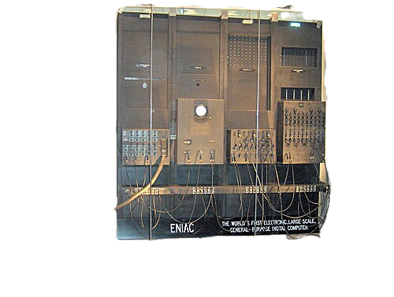
Созданная для военных вычислений, машина стала символом 1 поколения: ламповая элементная база, огромные размеры и такое же огромное потребление энергии.
UNIVAC I
1951 г.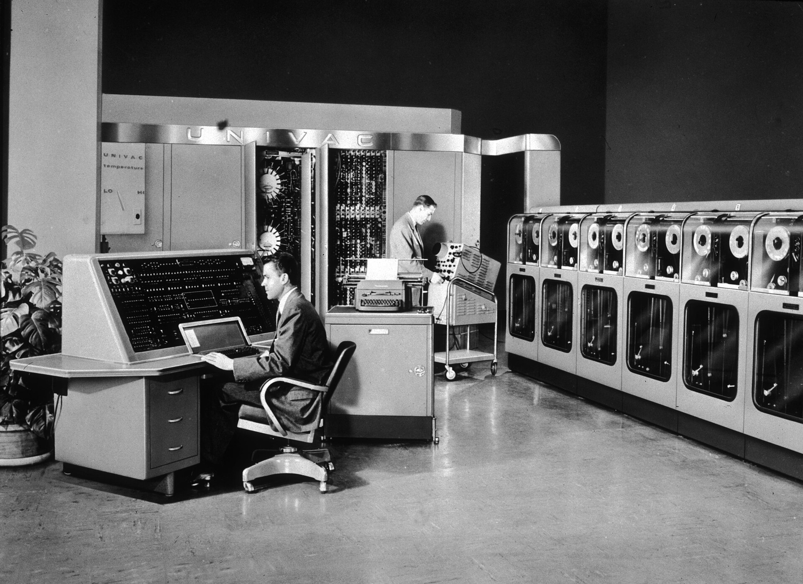
Первая коммерчески успешная электронная цифровая вычислительная машина, получившая известность после выборов в США 1952г.
М-1
1951 г.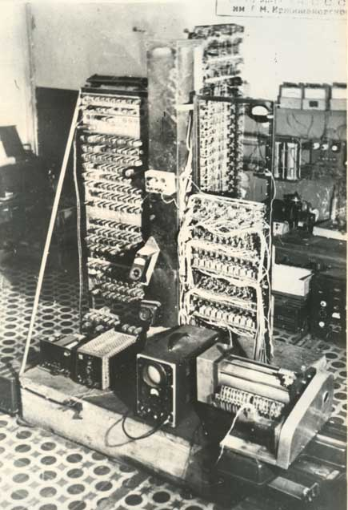
Ранний проект первой советской электронной цифровой вычислительной машины.
БЭСМ
1952 г.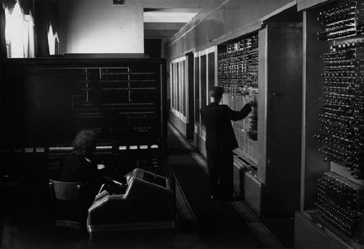
Большая Электронная Счетная Машина, одна из первых советских ЭВМ, использовавшаяся для научных расчетов.
2 поколение (конец 1950-х - середина 1960-х)
Транзисторы. Меньше размер, выше быстродействие, надежнее ламп.
Экспонаты: IBM 7090 (США), CDC 1604 (США), ЭВМ «Раздан-2» (СССР).
IBM 7090
1959 г.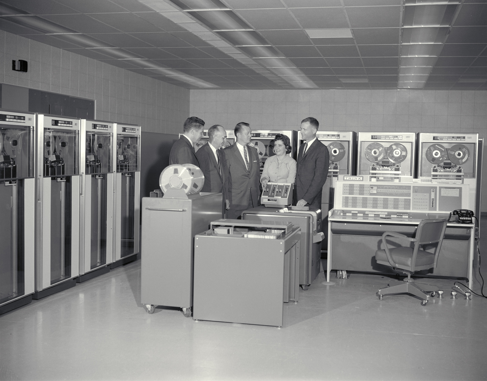
Машина на транзисторах, предназначенная для научных и инженерных расчетов, стала одной из самых мощных ЭВМ своего времени.
CDC 1604
1959 г.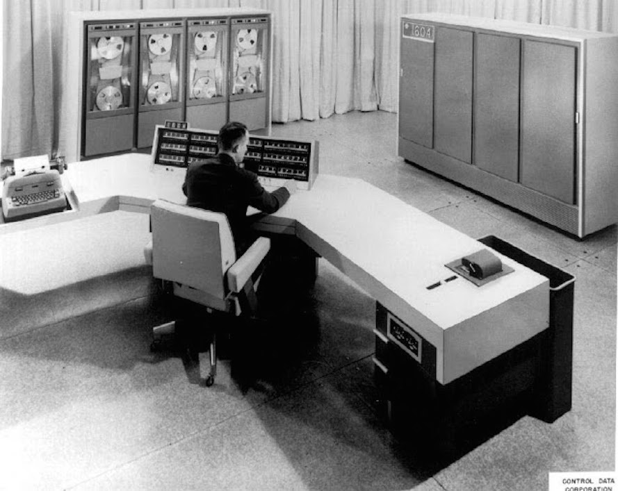
Одна из первых коммерчески успешных транзисторных ЭВМ, разработанная компанией Control Data Corporation.
ЭВМ «Раздан-2»
1961 г.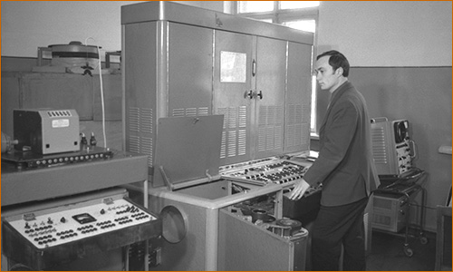
Советская транзисторная ЭВМ, использовавшаяся для научных расчетов и управления производственными процессами.
3 поколение (середина 1960-х - 1970-е)
Интегральные схемы (ИС). Использование микросхем, операционные системы, появление мини-ЭВМ.
Экспонаты: Семейство IBM System/360 (США), ЕС ЭВМ (СССР).
IBM System/360
1964 г.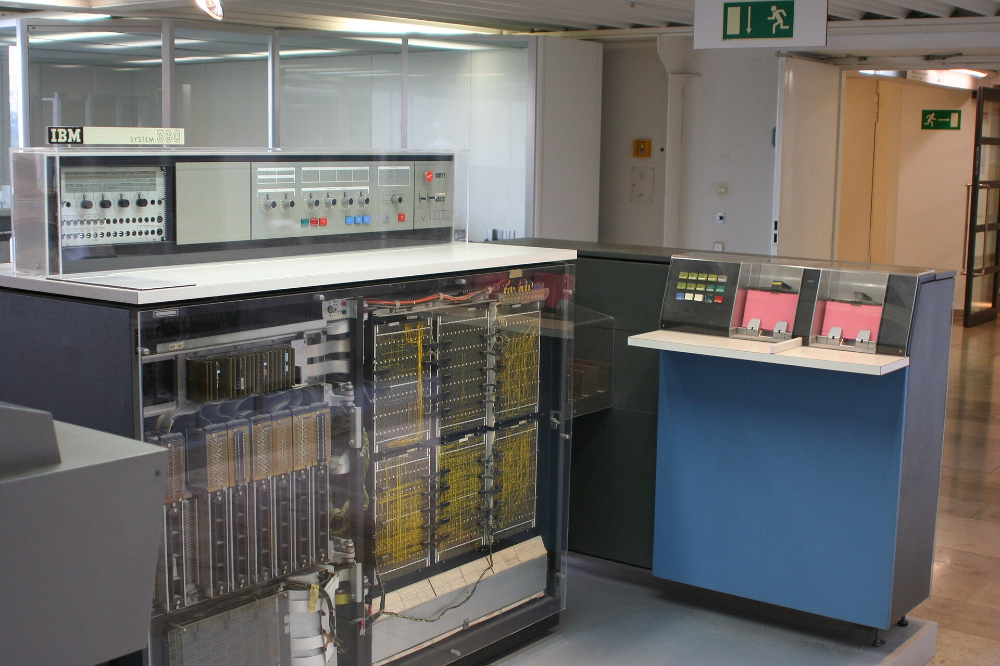
Первое семейство универсальных электронных вычислительных машин, разработанное компанией IBM.
ЕС ЭВМ
1965 г.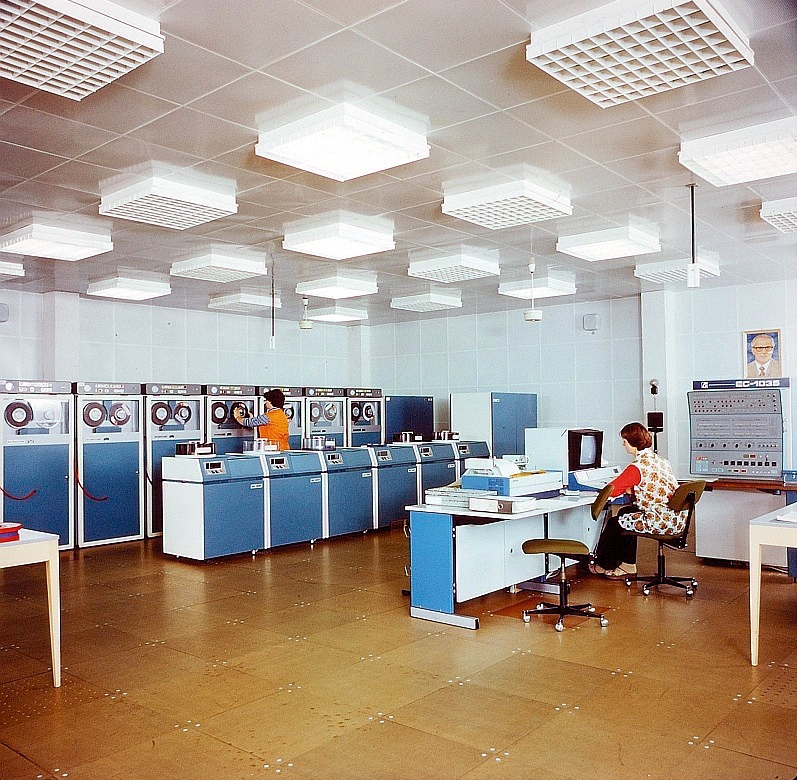
Советская серия мини-ЭВМ, разработанная на базе технологии интегральных схем.
4 поколение (1980-е - настоящее время)
Микропроцессоры и большие интегральные схемы (БИС). Появление персональных компьютеров, ноутбуков.
Экспонаты: Apple II, IBM PC, Intel 4004.
Intel 4004
1971 г.Первый коммерчески доступный микропроцессор, разработанный компанией Intel.
Apple II
1977 г.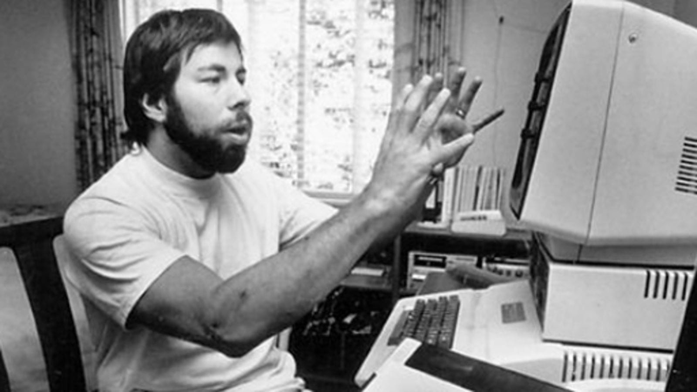
Один из первых успешных персональных компьютеров, разработанный компанией Apple.
IBM PC
1981 г.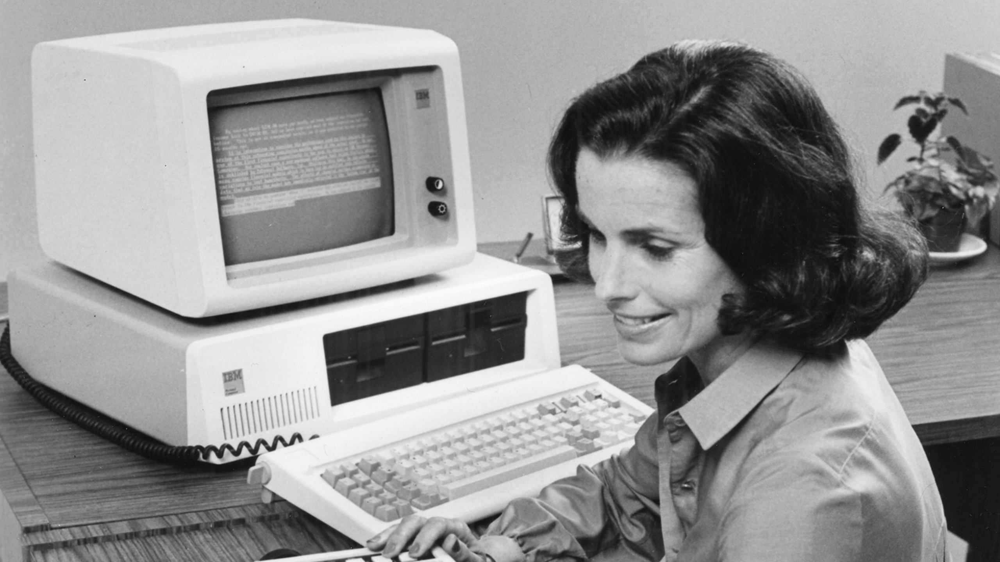
Первый персональный компьютер, разработанный компанией IBM, который стал стандартом для будущих моделей.
5 поколение (с 1990-х)
Перспективные компьютеры, квантовые вычисления.
Экспонаты: Sycamore, IBM Quantum.
Sycamore
2019 г.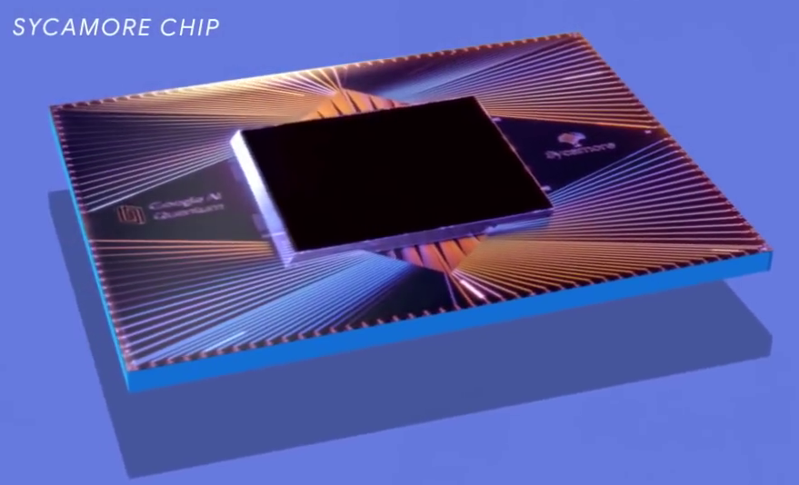
Квантовый процессор, разработанный компанией Google, который продемонстрировал квантовое превосходство.
IBM Quantum
2020 г.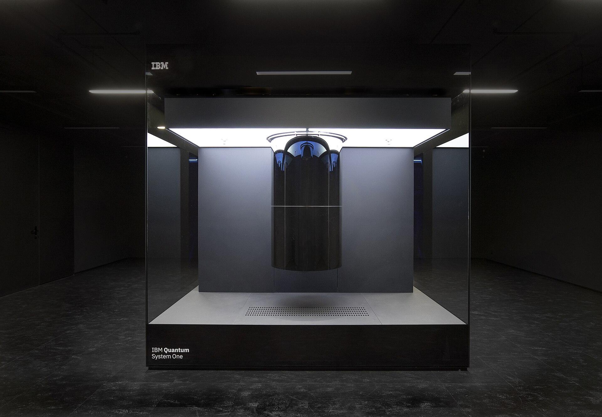
Платформа для квантовых вычислений, разработанная компанией IBM, предоставляющая доступ к квантовым процессорам через облако.